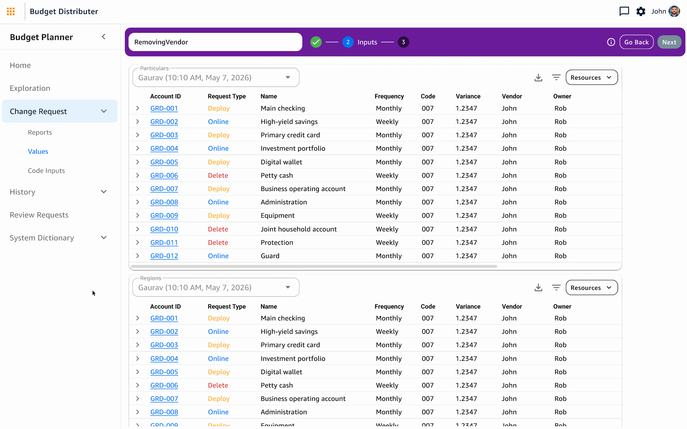
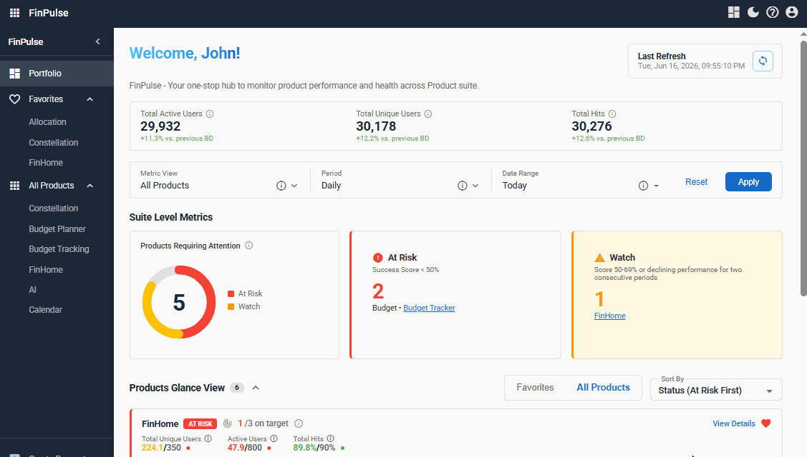
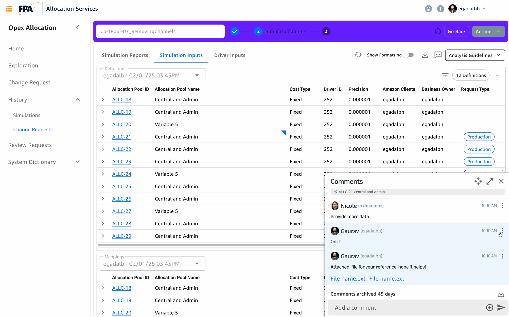
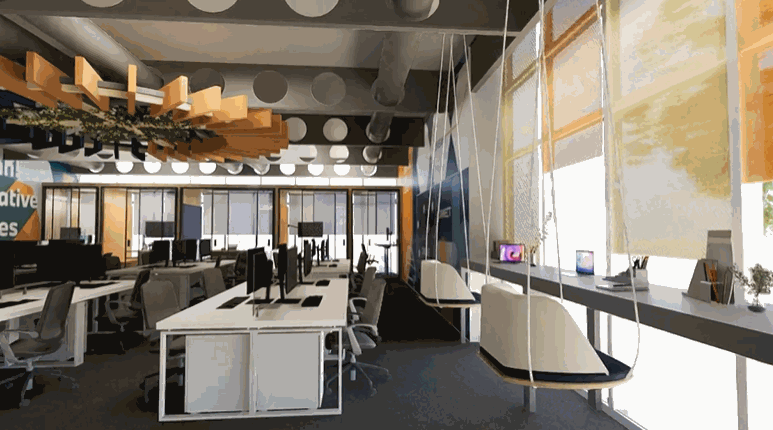
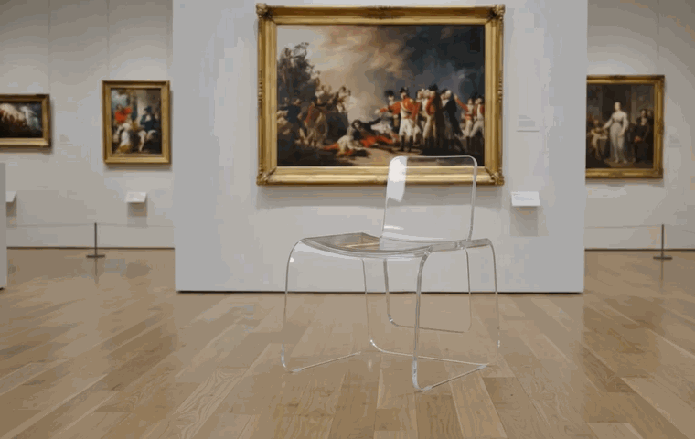
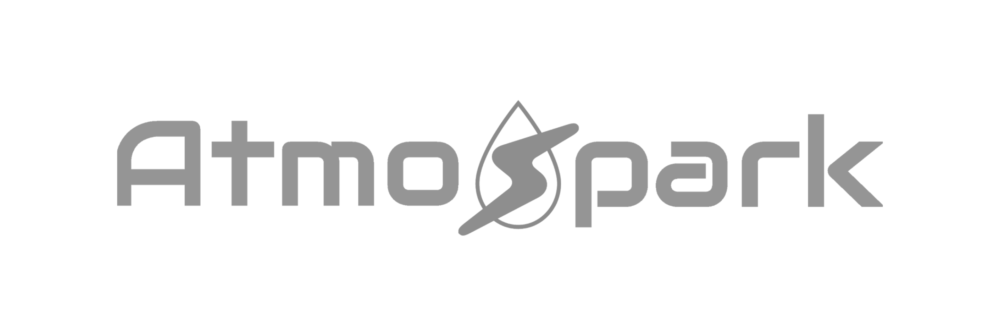
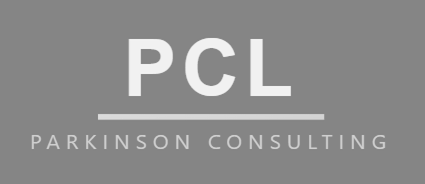

I create the future of user experiences for digital and physical products. I just want the things I build to get out of people's way — turning messy, complicated systems into things people can trust without thinking twice.







Outside of work, I write and compose music, play multiple instruments, cook, read, and split time between archery and chess — pursuits that, oddly enough, all come back to the same instinct: noticing structure, timing, and constraint, then making something coherent out of them. I think that's the same instinct I bring to design.
Strong at driving clarity in ambiguous situations — bringing structure to requirements and asking the right questions.
Sr. Software Development Manager @ AmazonImproved design consistency by aligning his work with broader design patterns and standards across the product.
Sr. Software Development Manager @ AmazonBridges complex engineering and human-centered design — turning novel tech and tight constraints into standardized design systems.
Product Engineer @ AtmoSpark TechnologiesHas a knack for collaborating with engineers and manufacturers so the design survives the development process.
Product Engineer @ AtmoSpark TechnologiesWhat stood out most was his ability to think beyond the immediate problem and push toward more impactful solutions — keeping the customer at the center.
Product Manager @ AmazonHis drive to improve stood out most — he quickly dove into Figma and explored how AI tools fit into our design workflow.
Sr. UX Designer @ AmazonDoesn't shy away from a challenge and is committed to expanding his skillset. His curiosity and adaptability stand out.
Sr. UX Designer @ AmazonA jack of all trades — willing to jump in, learn quickly, and contribute wherever the tech needs are.
Founder @ Worthy EndeavorsGreat energy and a strong desire to learn — even in a short tenure he did a great job for the team.
Founder @ Worthy EndeavorsBrings a strong balance of vision and execution. I'd highly recommend him to any team looking for a UX designer who thinks like a product leader.
Product Manager @ AmazonIf you're solving something messy, complicated, or unclear — let's talk about it.